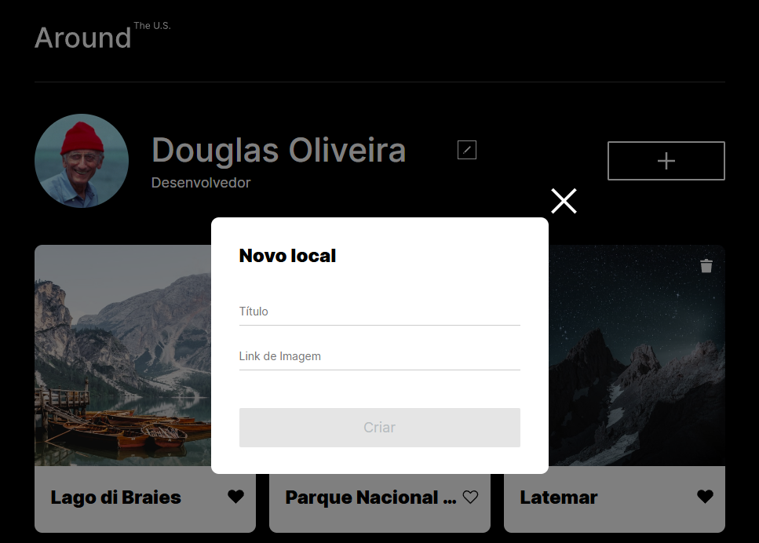

Olá, eu sou
Douglas oliveira.
Desenvolvedor web
Apaixonado por criar experiências
digitais incríveis e funcionais.

Sobre mim
Sou Desenvolvedor Front-End com sólida base em HTML5, CSS3, JavaScript, DOM, Git e GitHub,
criando interfaces
modernas, responsivas e centradas na experiência do usuário. Tenho experiência na construção de páginas com
design responsivo, seguindo princípios mobile-first, boas práticas de acessibilidade, otimização de
performance e organização de código.
Trabalho com foco em estruturação semântica, manipulação de DOM, responsividade avançada e
criação de
interfaces que funcionam perfeitamente em diferentes dispositivos e navegadores. Prezo por código limpo,
padronizado e fácil de manter, aplicando conceitos atuais do ecossistema front-end e técnicas para melhorar a
qualidade visual e funcional dos projetos.
Sou movido por aprendizado contínuo, curiosidade e atenção aos detalhes. Busco unir criatividade, lógica e
boas práticas para desenvolver soluções eficientes que entreguem experiências digitais consistentes e
profissionais. Meu compromisso é entregar resultados com qualidade, organização e excelência técnica.
Resumo das minhas qualidades
Forte domínio de HTML, CSS, JavaScript, DOM e responsividade
Código limpo, organizado e semântico
Conhecimento em Git e GitHub para versionamento profissional
Atenção a detalhes e padrão visual
Criatividade para solucionar problemas de interface
Mentalidade de crescimento e aprendizado contínuo
Boa lógica, foco e consistência
Capacidade de criar interfaces intuitivas e eficientes
Comprometimento com boas práticas e performance
Habilidades
Estou empenhado em nunca parar de aprender e melhorar.
Aqui estão algumas das tecnologias e habilidades que domino:
- HTML
- CSS
- JavaScript
- React
- Git
Projetos
De Pátria para Pátria

Projeto responsivo que conecta histórias pessoais de diferentes
partes do mundo — do Kentucky ao
Burundi, passando por País de Gales e Ucrânia.
A proposta é valorizar a origem cultural de cada indivíduo por meio de imagens, tipografia e
narrativa visual.
O design é limpo e intuitivo, focado na experiência do usuário. O código é organizado, seguindo boas
práticas de desenvolvimento web para garantir manutenção e escalabilidade futuras.
Ver
projeto
Pelos EUA

Around The US é um projeto web interativo que apresenta galeria de cartões com imagens de locais icônicos,
com funcionalidades de edição de perfil, adição/remoção de cartões e pop-up modal. O projeto demonstra
habilidades em HTML, CSS modular (BEM), JavaScript moderno com módulos ES6, validação de formulários e
manipulação do DOM.
A interface é responsiva, adaptando-se a diferentes tamanhos de tela. O design é limpo e intuitivo,
focado na experiência do usuário. O código é organizado, seguindo boas práticas de desenvolvimento web
para garantir manutenção e escalabilidade futuras.
Ver projeto
Biblioteca Peaks

A página da biblioteca Triple Peaks é o terceiro projeto no programa de desenvolvimento web
da
TripleTen. Ela foi criada usando HTML e CSS, com base no roteiro.
A página apresenta uma interface limpa e organizada, com seções distintas para diferentes tipos de
conteúdo, como livros, eventos e informações sobre a biblioteca.
A navegação é intuitiva, com um menu no topo da página que permite aos usuários acessar facilmente as
diferentes seções. O design é responsivo, garantindo que a página seja acessível em dispositivos móveis e
desktops.
Ver
projeto